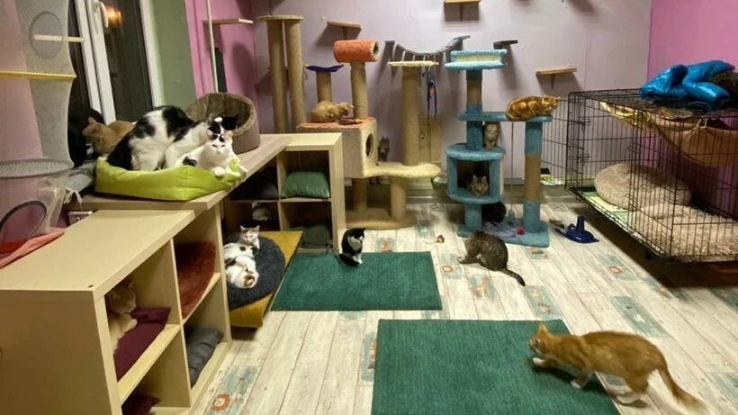

о приюте
Краснодарская городская благотворительная общественная организация приют для пострадавших животных "Котодом" была основана в далёком 2010 году и начинала свою деятельность с нескольких вольеров с бездомными животными.
С момента основания и по сей день мы являемся единственным официальным приютом для животных в г. Краснодаре.
Основной направленностью "Котодома" является помощь пострадавшим животным, оказавшимся на улице, которых в приюте содержится более 500. А главная наша гордость — более 10 000 кошек нашедших свой дом!
Приют не получает поддержки от государства и существует на пожертвования граждан. Но несмотря на постоянные трудности и отсутствие финансирования мы стараемся расти и не останавливаемся на достигнутом. Деятельность организации не ограничивается лишь содержанием приюта. Мы стремимся работать и в других направлениях!
На данный момент КГБОО приют для пострадавших животных "Котодомг" это:
- Содержание более 500 ранее травмированных собак и кошек;
- Пристройство приютских животных не только в географии Краснодарского края, но и в другие города и страны;
- Работа с детьми и подростками в рамках проектов "Зоотерапия", "Лучший друг" и др.;
- Проект "Кураторство";
- Развитое волонтёрское и благотворительное движение;
- Работа ветеринарного кабинета, включая различные услуги для домашних и безнадзорных животных по демократичным ценам;
- Льготная стерилизация бездомных животных.
